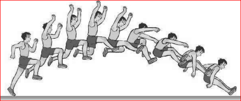
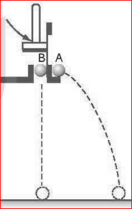
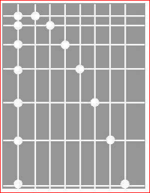
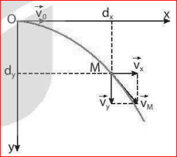
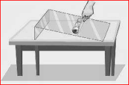
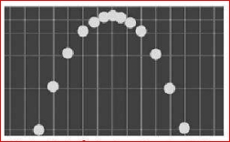
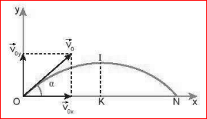

Chuyển động ném ngang là chuyển động có vận tốc ban đầu theo phương nằm ngang và chuyển động dưới tác dụng của trọng lực.
Thí nghiệm mô tả ở Hình 12.1 dùng để tìm hiểu chuyển động của vật bị ném theo phương nằm ngang.
Dùng búa đập nhẹ vào thanh thép giữ bi B, thanh thép chuyển động thả bi B rơi tự do đồng thời đẩy bi A theo phương nằm ngang khỏi giá đỡ với vận tốc \( v_{0} \).

Hình 12.1. Thí nghiệm về chuyển động nằm ngang

Hình 12.2. Ảnh chụp hoạt nghiệm chuyển động của hai viên bi A và B
❓ Câu hỏi:
Hai viên bi có chạm đất cùng một lúc không?
Việc phân tích ảnh chụp hoạt nghiệm thí nghiệm trên (Hình 12.2) giúp ta so sánh chuyển động rơi tự do của bi B (sự thay đổi vị trí của bi B theo phương thẳng đứng) với vận tốc ban đầu \( v_{0y} = 0 \) với sự thay đổi vị trí theo phương thẳng đứng của viên bi A bị ném ngang với vận tốc ban đầu theo phương nằm ngang \( v_{0x} = v_{0} \).
❓ Câu hỏi:
Hãy nhận xét về sự thay đổi vị trí theo phương thẳng đứng của hai viên bi sau những khoảng thời gian bằng nhau.
Thành phần chuyển động theo phương nằm ngang của viên bi A không ảnh hưởng đến thành phần chuyển động theo phương thẳng đứng của nó: Hai chuyển động thành phần này độc lập với nhau.
Chuyển động thành phần theo phương thẳng đứng của vật là chuyển động rơi tự do với vận tốc ban đầu bằng 0.
\( H = \frac{1}{2} \cdot g \cdot t^{2} \Rightarrow t = \sqrt{\frac{2H}{g}} \)
Thời gian rơi của vật bị ném ngang chỉ phụ thuộc độ cao H của vật khi bị ném, không phụ thuộc vận tốc ném. Nếu từ cùng một độ cao, đồng thời ném ngang các vật khác nhau với các vận tốc khác nhau thì chúng đều rơi xuống đất cùng một lúc.
Độ dịch chuyển trong chuyển động thành phần nằm ngang là: \( d_{x} = v_{x} \cdot t = v_{0} \cdot t \)
Giá trị cực đại của độ dịch chuyển trong chuyển động thành phần nằm ngang được gọi là tầm xa L của chuyển động ném ngang:
\( L = d_{xmax} = v_{0} \cdot t_{max} \)
Do đó: \( L = v_{0} \sqrt{\frac{2 \cdot H}{g}} \)

Đồ thị và quỹ đạo phân tích chuyển động ném ngang
❓ Câu hỏi:
Hãy quan sát ảnh hoạt nghiệm ở Hình 12.2 để chứng tỏ chuyển động thành phần theo phương nằm ngang là chuyển động thẳng đều với vận tốc \( v_{x} = v_{0} \).
🖐 Hoạt động:
1. Hãy đề xuất phương án thí nghiệm để kiểm tra những kết luận 2 và 3.
2. Dùng thước kẻ giữ ba viên bi (sắt, thủy tinh và gỗ) có cùng kích thước, trên một tấm thủy tinh đặt nghiêng... Hãy dự đoán tầm xa và làm thí nghiệm kiểm tra.

Một người đứng từ một đài quan sát ven biển, ném một hòn đá theo phương nằm ngang hướng ra biển với vận tốc \( 12\text{ m/s} \). Biết độ cao từ vị trí ném so với mặt biển là 40 m. Bỏ qua sức cản của không khí.
a) Sau bao lâu thì hòn đá chạm mặt biển?
b) Tầm xa L của hòn đá là bao nhiêu mét?
❓ Luyện tập:
1. Nếu đồng thời ném hai quả bóng giống nhau với những vận tốc bằng nhau theo phương nằm ngang từ hai độ cao \( h_1, h_2 \) khác nhau (\( h_1 < h_2 \)) thì:
a) Quả bóng ném ở độ cao nào chạm đất trước?
b) Quả bóng ném ở độ cao nào có tầm xa lớn hơn?
2. Một máy bay chở hàng đang bay ngang ở độ cao 490 m với vận tốc \( 100\text{ m/s} \) thì thả một gói hàng. Lấy \( g = 9,8\text{ m/s}^{2} \).
a) Sau bao lâu gói hàng chạm đất?
b) Tầm xa của gói hàng?
c) Vận tốc khi chạm đất?
Khi đánh một quả bóng tennis lên cao theo phương xiên góc với phương nằm ngang, người ta thấy quả bóng bay lên rồi rơi xuống theo một quỹ đạo có dạng hình parabol. Chuyển động của quả bóng trong trường hợp này gọi là chuyển động của vật bị ném xiên.

Hình 12.6. Ảnh chụp hoạt nghiệm chuyển động ném xiên
❓ Câu hỏi:
Hãy tìm thêm ví dụ về chuyển động ném xiên trong đời sống.
Phân tích chuyển động ném xiên thành hai chuyển động thành phần: chuyển động thành phần theo phương thẳng đứng và chuyển động thành phần theo phương nằm ngang.

Hình 12.7. Phân tích chuyển động ném xiên
Bỏ qua sức cản của không khí, có thể thiết lập được công thức xác định tầm cao và tầm xa của chuyển động ném xiên:
Tầm cao:
\( H = d_{ymax} = \frac{v_{0}^{2} \cdot \sin^{2}\alpha}{2 \cdot g} \)
Tầm xa:
\( L = d_{xmax} = \frac{v_{0}^{2} \cdot \sin 2\alpha}{g} \)
Một người nhảy xa với vận tốc ban đầu 7,5 m/s theo phương xiên \( 30^{\circ} \) với phương nằm ngang. Biết vị trí dậm nhảy ngang với hố nhảy. Bỏ qua sức cản của không khí và lấy \( g = 9,8\text{ m/s}^{2} \). Tính:
a) Vận tốc ban đầu theo phương thẳng đứng và nằm ngang.
b) Tầm cao H.
c) Thời gian đạt tầm cao.
d) Thời gian rơi xuống hố.
e) Tầm xa L.
❓ Luyện tập:
Người ta bắn một viên bi với vận tốc ban đầu \( 4\text{ m/s} \) hướng lên theo phương xiên \( 45^{\circ} \). Tính: (g=9.8 m/s²)
1. Vận tốc nằm ngang và thẳng đứng lúc bắt đầu, sau 0.1s, sau 0.2s.
2. Thời điểm đạt tầm cao, tầm cao H, gia tốc tại H.
3. Vị trí và thời điểm vận tốc cực tiểu.
4. Thời điểm chạm sàn, vận tốc chạm sàn, tầm xa L.
I. Mục đích:
Nghiên cứu tìm hiểu điều kiện để ném một vật đạt tầm bay xa lớn nhất.
II. Chuẩn bị:
Dụng cụ bắn bi, thước đo, địa điểm an toàn...
III. Các bước tiến hành:
Bài 1: Một vật được ném ngang từ độ cao \( H = 20\text{ m} \) với vận tốc ban đầu \( v_0 = 15\text{ m/s} \). Lấy \( g = 10\text{ m/s}^2 \). Tính thời gian rơi và tầm xa của vật.
Bài 2: Một quả bóng được đá xiên góc \( \alpha = 45^\circ \) so với phương ngang với vận tốc \( v_0 = 20\text{ m/s} \). Lấy \( g = 10\text{ m/s}^2 \). Tính tầm cao cực đại và tầm bay xa của quả bóng.
Bài 3: Máy bay bay ngang với vận tốc \( v_0 = 50\text{ m/s} \) ở độ cao \( H = 500\text{ m} \) tiến hành thả hàng. Lấy \( g = 10\text{ m/s}^2 \). Để hàng rơi trúng mục tiêu, phi công phải thả hàng khi máy bay cách mục tiêu theo phương ngang một đoạn bao nhiêu?